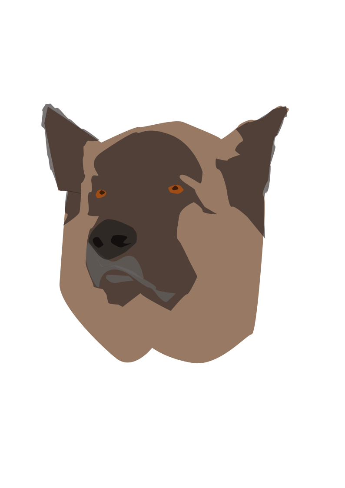

I'll be using it to create a logo with inkscape
Firstly after downloading the software you need to set a few setting listed bellow

To get to the setting ,use Shift+Ctrl+D.
Once you're done u can choose a photo of any animal u want to make a logo with and drag it into the software

And make sure the Zoom is 1:1 stated above. I choose a photo of a german sheperd as I find them cute.

Now you need to add a layer on top of your photo before u start to create your logo ,to add 1 click on the logo stated bellow.

Decrease the opacity % to make sure you are able to see the line you are sketching over.

Now you have to add another layer to start drawing ,simply click on the layer tab and click on the green plus

Now select pen (keyboard short cut is b) click a point u want to start sketching and click a second point and hold, drag up and down.
You will notice there will be a curve forming ,this will be use very offten.

Once you connected the start and the end point together ,u may change the colour to your liking by clicking the colour below.
I chose my logos eyes to be brown stated bellow

Now you can use more layer to add diffrent colour ,remeber to set the layer carefully to make sure the right layer is infront/behind the other layer.
You can also toggle off the visibility of layer 1 to see if your logo look right. Once done you may safe .

GIMP is also a free software found in the website ,I'll be using it to change my image background.
Firstly ,open the software and click file>open>open the photo u want to use.Then follow the 2 image bellow.


Choose these 2 before clicking and draging the outline of what you want.


You'll notice that my left arm have a gap that is still there ,to get rid of it ,select what is shown in the image bellow and click and drag again.


Once done ,follow the 2 intruction bellow and you're done


Fusion 360 this is not a free software ,some school have offer this as a free learning software.
I'll be creating these 2 below. (On the upcoming lesson I will not repeat the same guide as it will take way too much time)


(exercise 1&2/3&4 ) To start ,click on sketch and click on one of the 3 yellow box (it dose not matter which one you click)

Once you're in sketch mode you will notice there are some changes. Notice the image bellow ,these are the function require you to sketch out the object you want.

On the very left, it is line which is used to draw lines.The one beside it is to use to draw retangles or square. 3rd is circle,it draw circles.
The very right is to use to adject the diamention of the drawing (size of circle ,length of retangle,distance between 2 retangle ,etc)
There are more when you select each one more option will appear on the right of your screen, feel free to explore what you can do with it.

It should look like this when you had done skecthing. Click top left of the screen to finish sketch. Now follow the image below.

This is a function that allow you to create and cut a object .

We will not need to cut anything so choose join.

Make sure to select the sketch you choose and set the distance to what you want before clicking ok.
And you are done, this is the end of lesson 3.